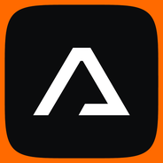
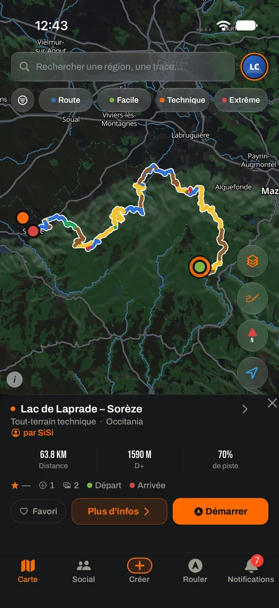

L'application

Traces moto & trail
L'application des motards trail et des explorateurs de chemins : trace ton itinéraire ou importe un GPX, suis-le avec les annonces vocales, garde les cartes pour rouler sans réseau avec Premium, et partage tes sorties avec la communauté.
Traces GPX
Éditeur de traces
Suivi de trace
Groupe de route
Cartes hors ligne
5 langues
 Sur iPhone et iPad, dans l'Union européenne, en Suisse, en Norvège et en Islande. Bientôt sur Android.
Sur iPhone et iPad, dans l'Union européenne, en Suisse, en Norvège et en Islande. Bientôt sur Android.
Disponible sur l'App Store
advmap.sisilab.app →

Capture de l'app. Données cartographiques © OpenMapTiles © les contributeurs d'OpenStreetMap (ODbL). Relief et courbes de niveau : Mapzen Terrain Tiles (USGS, Copernicus et autres sources, voir les mentions légales d'ADVMAP).